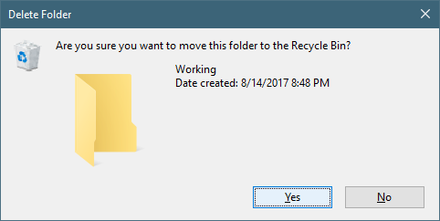

The SDX Launcher is very fickle, and can easily generate error messages. The following guide will show you the error, and how to fix it.
The above error is telling you that the Directory selected in the "Settings Button" section isn't set correctly.
Notice that the error is pointing to the "7 Days To Die Dedicated Server", but the drop down is showing "7 Days To Die [1.0]. This caused the SDX Launcher to be confused, as you've selected a Client compile ( "7 Days To Die [1.0]" ), but the "Settings Button" hasn't set the Game Directory to a Client install. Rather, we mistakenly set it to the "7 Days To Die Dedicated Server".
To Fix: Follow the instructions in the "Settings Button", and select the "C:\SDXModding\Game\Working".
The above error is telling you that the FileNotFoundException was thrown. If you read the whole path, you'll see that it cannot find the Assembly-CSharp.dll. This can happen if the "Backup" folder exists, but the DLL doesn't. If you had a previous SDX Launcher failure, it could have created the Backup folder, but did not actually make a back up.
To Fix: Click on the "Actions" menu, and click "Delete Backup".
Click on "Yes" in the "Are you sure you want to "Delete Backups"
Once clicked on "Yes", the back up folder is cleared.
The above error is saying that "Could not find file", which points to the Mods.dll. You can copy the Mods.dll file from "C:\SDXModding\SDX_0.7.0\Mods.dll" to "C:\SDXModding\Game\Working\7DaysToDie_Data\Managed"
This error indicates there was an NullReference Exception. Note, this was after the Backup, and beginning the SDX compile.
To Fix: You will need to Delete the Working folder.
Open up Explorer and go to "C:\SDXModding\Game"
Right click on "Working", and select "Delete"
Then click on "Yes"

Re-Copy the "Clean Install" folder.
In the SDX Launcher, click on the "Actions" menu, and click on "Delete Backup".
Created with the Personal Edition of HelpNDoc: Free Kindle producer